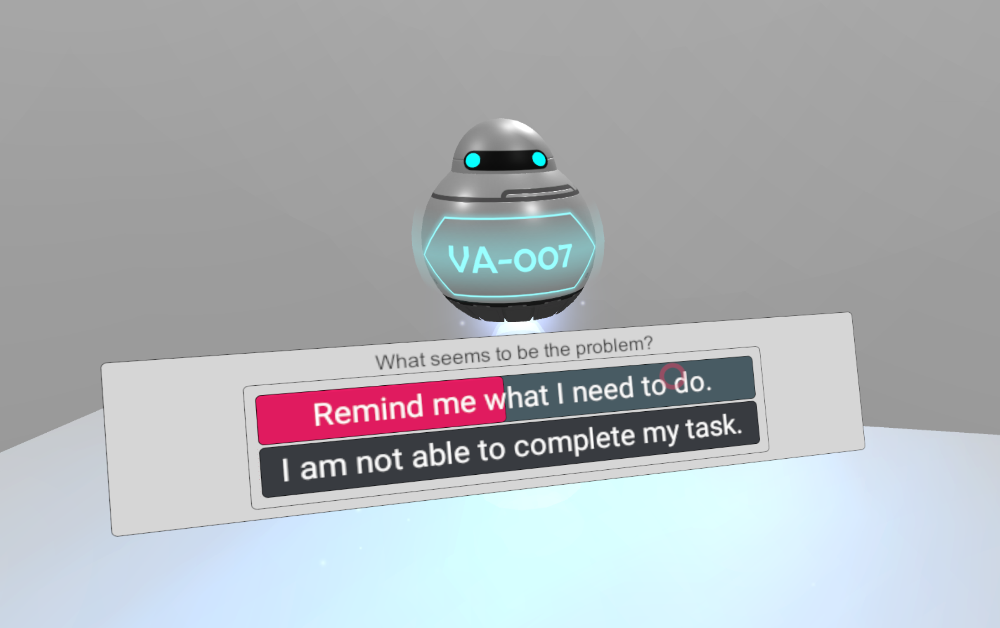
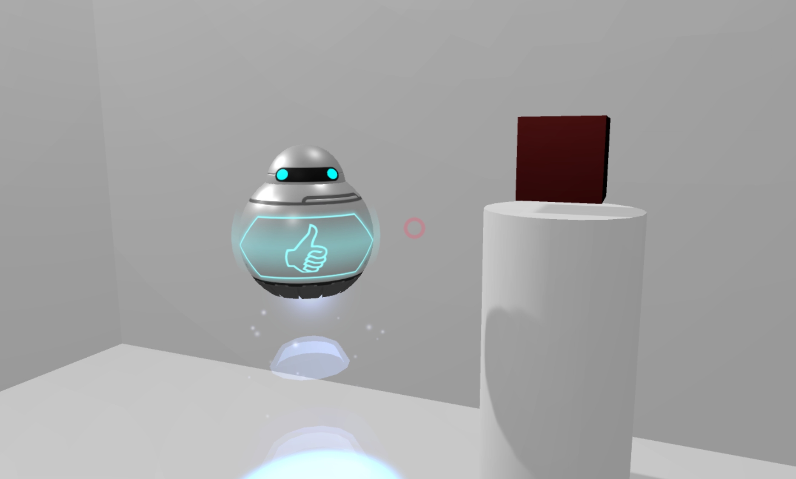
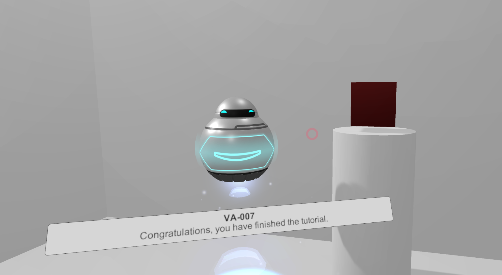
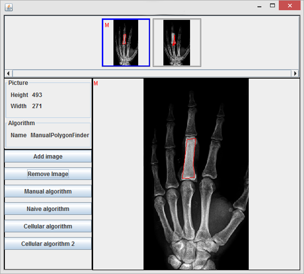

About me
Hi there, welcome to my site!
I am a software engineer living in the French part of Switzerland. I finished my master's degree on the 12th of March. Check out my projects if you want to read my thesis.
I have been a gamer most of my life, starting very early with the original Prince of Persia made by Brøderbund. I was about 8 years old, on a computer that had Windows on it. I remember playing that game with my father until we beat it. After that glorious milestone we switched to adventure games: Loom, a game that is loved by all my family; The Daedalus Encounter which made me fall in love with Science Fiction stories. Rama came next, which showed math concepts I did not see in school then (the puzzle within "Bankock"). Sadly, it did not spark an interest in mathematics at that time, I was really horrible at math. Finally, before moving to Switzerland, I played the greatest role-playing game of all time: Baldur's Gate, a game which made realize that the story of a game beats everything.
As my parents were computer scientists and teachers, I was pushed toward a scientific education, one which bore its fruits only a decade later when my interest for programming grew (and all math concepts became clear all of a sudden). Seeing the requirements for jobs in the game industry, I decided to pursue this career and get a Bachelor degree which offered computer graphics programming and math courses. They were not sufficient, I expected much more, and joined a Master's degree in Software Enginnering which gave me the opportunity to program some prototypes of games and game systems. In my free time I learned what I could find concerning game engine development, rendering, and game programming.
I am currently working on two projects: a game engine made from scratch following the teachings of Casey Muratori (check out Handmade Hero) and a Witcher-like RPG in Unreal Engine, where magic plays a role not seen before in games. You'll get to play it soon, once the prototype is done and it's up on Kickstarter (or Github if I go opensource).
Hobbies and Interests
I love taking photos (much to the annoyance of my lovely girlfriend). I read a lot, currently on the fifth tome of the Dark Tower saga. Whoever hates the movie needs to read the books again and open their minds, the film is a brilliant modern rendition of the original story (yes, even with missing characters and different scenario). I cannot stand the writings of Tolkien, they are too booring, so let's talk about something else. I still play during my free time, mostly story-rich games. The latest would be the Witcher 3, a brilliant game in many aspects. It is lacking one thing though: a true female player character. Would you not love to play the role of Yennefer or Ciri for the whole game, and experience their side of the epic? I know I would, so maybe you soon will get the chance.
Projects
Below you will find interesting projects I have worked on during these last years.
Saturn's Rings

Made with Unreal Engine 4
Created as a small prototype for a VR exhibition in a Swiss museum, we take the player into close orbit around Saturn. Here they will be able to travel wheverver they want, in complete freedom; wether it is to see the rocky particles that compose the rings of Saturn, or to touch the frozen water rocks that orbit the planet.
Virtual Humans:
Avatars and Agents designed to help people

Made with Unity
Abstract
Numerous application domains find themselves with the need of providing instruction and training to their users, be it space-walking, scuba-diving, driving, emergency or medical interventions. Currently, these instructions may be done within simulators with a live professional coach that provides feedback and direction during or after the activity has been finished. These coaches are essential to the correction of wrong movements, the elimination of counter-productive or life-endangering reactions, or even habit forming and motivation. This makes them a valuable and expensive asset that everyone wants. Their knowledge can be recorded and shared, patterns identified and studied in order to build intelligent and autonomous systems that can play the role of a such a coach. This paper describes the various aspects and challenges we face when building such a system, where a prototype of a virtual coach is developed, and provides a framework for future work in the domain of Serious Games, but that can also be applied to all other domains of application.
Images


Reverse Engineering
During my Master's degree I took classes in reverse engineering in which we had to crack the password checks of Linux executables. Knowing assembly was important, as we did not have access to IDA Pro (a very expensive and powerfull code reverser). One of the highlights of our labs was the binary instrumentation one, in which we used PINtools by Intel to overcome the protections put in place.
Older Works
Radiography Prospection
Along with two other students, we have developed a radiograph analysis prototype, which allowed the identification of similar zones in a set of radiographs. The prototype's goal was to define the area in which cancerous cells may be present, and the algorithm searched for similar zones within all other images provided of the patient.
I managed the team during the whole project, implemented image zoom functionality, corrected several architecture faults, and corrected the cellular automata algorithm that detected the similarities.

Collision System with the Qt framework
I was responsible for the creation of a 2D collision system for a platformer game developed with the Qt framework. There was a bug I overlook, which allowed the player to teleport up on platforms if (s)he hit them on the side and the platform's height was smaller than the player's. It looked like the player could climb so we kept it as an undocumented feature.
Skills
Technical Knowledge
Programming Languages
- C/C++
- GLSL
- HLSL
- C#
- Assembly
- Java
- Python
- Perl
- PHP
- Javascript
Concepts
- Rendering Pipeline
- Parallel Programming
- Reverse Engineering
Technologies
- OpenGL
- WebGL
- UWP
- Win32
- Qt
Tools
- Unreal Engine 4
- Unity
- CUDA
- Git
- Visual Studio
- Photoshop
- ZBrush
- Maya
Contact
You can contact me on through any of the social medias.